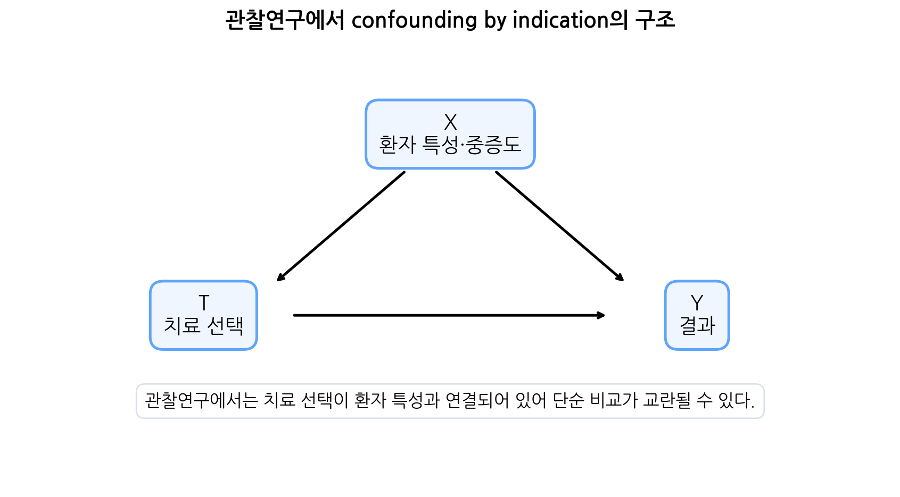
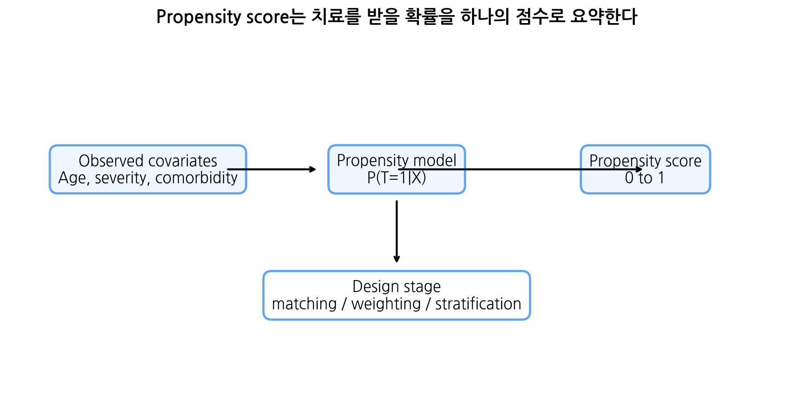
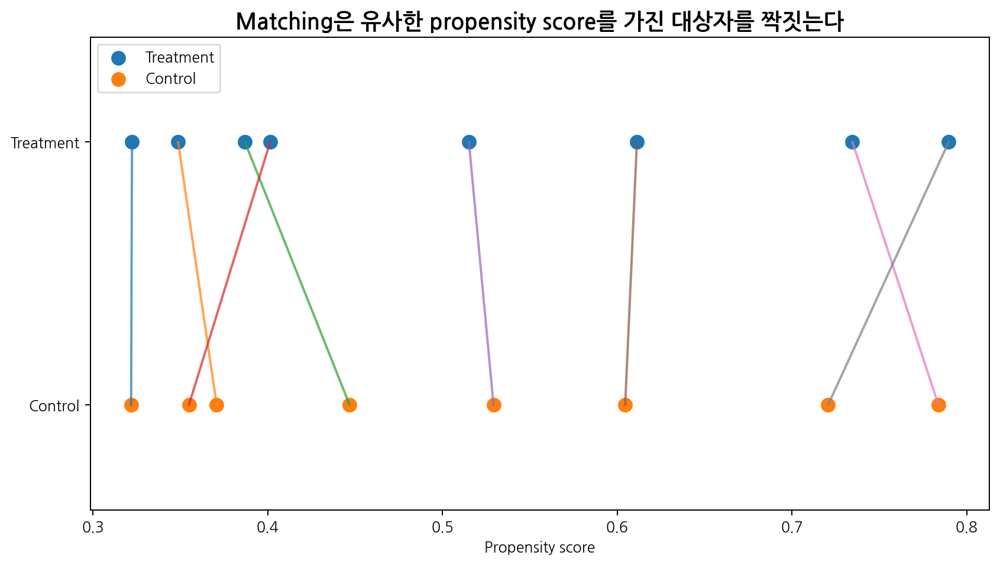
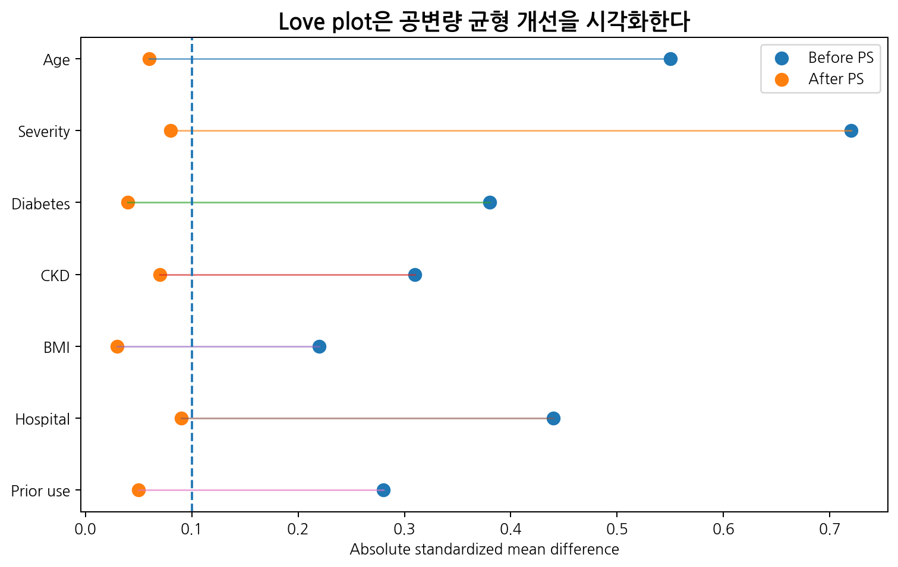
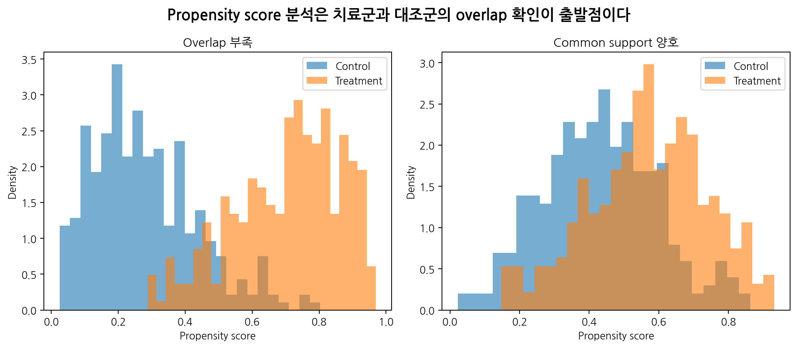
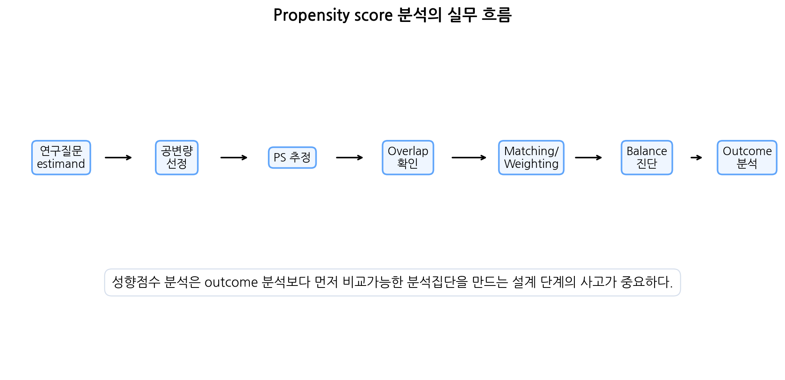

이번 장에서는 성향점수(propensity score)에 대해 학습한다. 임상시험에서는 무작위배정이 치료군과 대조군의 비교가능성을 확보하는 핵심 원리임을 배웠다. 그러나 실제 의학 연구에서는 무작위배정이 항상 가능하지 않다.
예를 들어 다음과 같은 연구 질문은 실제 진료자료나 보험자료, 전자의무기록을 이용한 관찰연구로 수행되는 경우가 많다.
실제 진료환경에서 신약 A와 기존 약물 B의 효과 비교
수술 방법 A와 수술 방법 B의 장기 예후 비교
중환자실에서 특정 치료전략의 사망률 영향 평가
고령 환자에서 항응고제 사용과 출혈 위험 비교
건강보험자료를 이용한 약물 안전성 연구
전자의무기록 기반 치료 패턴과 재입원 위험 분석
관찰연구에서는 연구자가 치료를 무작위로 배정하지 않는다. 치료 선택은 환자의 나이, 중증도, 동반질환, 의사의 판단, 병원 특성, 이전 치료 반응 등과 관련되어 있다. 따라서 치료군과 대조군은 처음부터 다를 수 있다. 이러한 차이가 outcome과도 관련되어 있으면 단순 비교는 치료효과와 baseline 차이를 혼합하게 된다.
이를 흔히 confounding by indication이라고 한다. 더 중증인 환자에게 적극적 치료가 선택되는 상황을 생각하면 이해하기 쉽다. 치료군의 사망률이 높게 관찰되더라도 그것이 치료가 해로워서인지, 원래 치료군 환자가 더 중증이었기 때문인지 구분하기 어렵다.

Propensity score는 이러한 관찰연구에서 치료군 간 비교가능성을 높이기 위해 사용하는 대표적 방법이다. 핵심 아이디어는 다음과 같다.
관찰된 공변량을 바탕으로 각 대상자가 치료를 받을 확률을 추정하고, 이 확률이 비슷한 대상자들끼리 비교하거나 가중치를 부여하여 치료군과 대조군의 공변량 분포를 균형 있게 만든다.
성향점수의 정의는 다음과 같다.
\[e(X)=P(T=1|X)\]
여기서 \(T\)는 치료 여부이고, \(X\)는 치료 전 관찰된 공변량이다.
Propensity score는 관찰된 baseline 공변량을 이용해 치료를 받을 확률을 추정하고, 그 점수를 이용하여 치료군과 대조군의 비교가능성을 높이는 방법이다.
12.2 관찰연구와 교란
12.2.1 관찰연구에서 치료 배정은 무작위가 아니다
관찰연구에서는 치료가 무작위로 배정되지 않는다. 실제 진료에서는 다음과 같은 이유로 치료가 선택된다.
치료 선택에 영향을 주는 요인
예
환자 특성
나이, 성별, 체중
질병 특성
중증도, 병기, 증상
동반질환
당뇨, 신부전, 심부전
이전 치료
약물 반응, 부작용
의사 판단
위험도 평가, 경험
병원 요인
장비, 전문인력, 진료지침
환자 선호
비용, 편의성, 부작용 우려
이러한 변수들이 outcome에도 영향을 준다면 교란이 발생한다.
예를 들어 수술군의 생존율이 더 좋아 보인다고 하자. 이는 수술 자체가 효과적이어서일 수 있지만, 수술을 받을 정도로 건강한 환자들이 선택되었기 때문일 수도 있다. 반대로 중환자에게 더 적극적인 치료가 선택되면 치료군의 결과가 더 나빠 보일 수 있다.
12.2.2 교란변수의 조건
Confounder는 일반적으로 다음 조건을 만족하는 변수이다.
치료 또는 노출과 관련이 있다.
outcome과 관련이 있다.
치료의 결과가 아니다.
기호로는 다음처럼 생각할 수 있다.
\[X \rightarrow T\]
\[X \rightarrow Y\]
여기서 \(X\)는 confounder, \(T\)는 치료, \(Y\)는 outcome이다.
치료 이후에 발생한 변수는 보통 propensity score model에 넣으면 안 된다. 치료효과 경로의 일부를 차단하거나 새로운 bias를 만들 수 있다.
12.2.3 무작위배정과 관찰연구의 차이
무작위배정 임상시험에서는 치료 배정이 관찰된 공변량뿐 아니라 관찰되지 않은 공변량과도 독립이 되도록 설계한다.
\[T \perp X\]
반면 관찰연구에서는 일반적으로 다음이 성립하지 않는다.
\[T \not\perp X\]
따라서 관찰연구에서는 통계적 조정이 필요하다. 하지만 통계적 조정은 무작위배정을 완전히 대체하지 못한다. 특히 측정되지 않은 교란변수는 여전히 남을 수 있다.
12.3 Propensity score의 정의와 성질
12.3.1 Propensity score의 정의
Propensity score는 관찰된 공변량 \(X\)가 주어졌을 때 치료를 받을 조건부 확률이다.
\[e(X)=P(T=1|X)\]
여기서
\(T=1\): 치료군
\(T=0\): 대조군
\(X\): 치료 전에 측정된 baseline covariates
이다.

예를 들어 어떤 환자가 78세이고, 중증도가 높고, 당뇨와 신부전이 있으며, 과거 치료 실패가 있었다고 하자. 이러한 특성 때문에 적극적 치료를 받을 확률이 0.82로 추정되면 이 환자의 PS는 0.82이다.
12.3.2 Balancing score
Propensity score의 중요한 성질은 balancing property이다. 적절히 추정된 propensity score가 주어지면, 같은 PS를 가진 대상자들 안에서 관찰된 공변량의 분포가 치료군과 대조군 사이에서 균형을 이룬다.
이를 기호로 쓰면 다음과 같다.
\[T \perp X \mid e(X)\]
즉 같은 propensity score 수준에서 치료 여부는 관찰된 공변량과 독립이 된다.
이 성질 때문에 여러 공변량 \(X_1,\ldots,X_p\)를 모두 직접 맞추는 대신, 하나의 점수 \(e(X)\)를 이용해 matching이나 weighting을 수행할 수 있다.
12.3.3 강한 무교란성 가정
Propensity score 방법이 인과효과를 추정하려면 관찰된 공변량을 조건으로 치료 배정이 potential outcomes와 독립이라는 가정이 필요하다.
\[(Y^1,Y^0) \perp T \mid X\]
이를 conditional exchangeability, no unmeasured confounding, strong ignorability 등으로 부른다.
이 가정은 자료만으로 완전히 증명할 수 없다. 연구자는 임상 지식과 자료의 풍부함을 바탕으로 주요 교란변수가 충분히 측정되었다고 주장해야 한다.
12.3.4 Positivity 가정
또 다른 중요한 가정은 positivity이다. 모든 공변량 조합에서 치료와 대조 치료를 받을 가능성이 모두 있어야 한다.
\[0 < P(T=1|X) < 1\]
만약 특정 중증도 환자는 모두 치료군이고 대조군이 전혀 없다면, 그 환자군에서 치료와 대조를 비교할 수 없다. 이런 경우 모델은 관찰되지 않은 영역으로 extrapolation하게 된다.
하지만 PS model의 목적은 outcome을 예측하는 것이 아니라 치료군과 대조군의 covariate balance를 확보하는 것이다. 따라서 PS model의 성능을 AUC만으로 평가해서는 안 된다. AUC가 높다는 것은 치료군과 대조군이 매우 잘 구분된다는 의미일 수 있고, 오히려 overlap이 부족하다는 신호일 수 있다.
12.4.2 어떤 변수를 넣을 것인가?
PS model에는 치료 전에 측정된 변수 중 교란변수(confounder) 가능성이 있는 변수를 포함한다. 특히 outcome과 관련된 변수는 balance를 맞추는 것이 중요하다.
변수 유형
포함 여부
이유
치료와 outcome 모두 관련
포함
confounder
outcome과 강하게 관련
대체로 포함
정밀도와 bias 감소
치료와만 관련, outcome과 무관
포함해도 되나 효율 저하 가능
balance에는 영향
치료 후 변수
제외
mediator 조정 위험
충돌변수(collider)
제외
collider bias 위험
도구변수(instrumental variable) 성격 변수
주의
분산 증가, bias 가능성 논의
공변량 선택은 p-value나 자동 변수선택에만 의존하지 말고, 임상적 지식과 causal diagram을 바탕으로 해야 한다.
12.4.3 PS model을 수정하는 기준
PS model은 outcome model처럼 p-value를 보고 고르는 것이 아니다. PS model을 만든 뒤 반드시 balance를 평가한다. Balance가 좋지 않으면 다음을 고려한다.
비선형항 추가
상호작용항 추가
중요한 공변량 추가
다른 matching 방법 사용
caliper 조정
trimming 또는 restriction
weighting 방법 변경
overlap weight 고려
중요한 원칙은 outcome을 보기 전에 balance를 개선하는 것이다. Outcome 결과를 보면서 PS model을 바꾸면 분석자의 자유도가 증가하고 bias가 생길 수 있다.
12.5 Propensity score 방법의 종류
12.5.1 개요
Propensity score를 사용하는 대표 방법은 다음과 같다.
방법
핵심 아이디어
대표 estimand
Matching
비슷한 PS 대상자를 짝짓기
ATT가 흔함
IPTW
PS 기반 가중치로 pseudo-population 생성
ATE 또는 ATT
Stratification
PS 분위수 또는 층 안에서 비교
층별 평균
Covariate adjustment
outcome model에 PS를 공변량으로 포함
모형 의존
Overlap weighting
overlap이 좋은 대상자에 큰 가중치
overlap population
각 방법은 목표 estimand, 대상자 제외 여부, 가중치 안정성, 해석 가능성이 다르다.
12.5.2 ATE와 ATT
Propensity score 분석에서 먼저 정해야 할 것은 어떤 causal estimand를 원하는지이다.
12.5.2.1 ATE
Average treatment effect, ATE는 전체 대상자 집단에서 모든 사람이 치료를 받았을 때와 모든 사람이 대조 치료를 받았을 때의 평균 outcome 차이이다.
\[ATE=E(Y^1-Y^0)\]
12.5.2.2 ATT
Average treatment effect in the treated, ATT는 실제 치료를 받은 대상자 집단에서 치료를 받았을 때와 그들이 대조 치료를 받았더라면의 평균 outcome 차이이다.
\[ATT=E(Y^1-Y^0|T=1)\]
ATT는 “실제로 치료받은 환자들에게 이 치료가 어떤 효과를 가졌는가?”라는 질문에 가깝다. Matching은 종종 ATT를 목표로 한다.
12.6 Propensity score matching
12.6.1 Matching의 기본 아이디어
Propensity score matching은 치료군 대상자와 유사한 PS를 가진 대조군 대상자를 짝짓는 방법이다.

Matching은 유사한 propensity score를 가진 대상자를 짝짓는다.
Matching 후에는 치료군과 대조군의 baseline 공변량 분포가 더 비슷해져야 한다. 이때 중요한 것은 outcome을 보기 전에 balance를 확인하는 것이다.
12.6.2 Nearest neighbor matching
Nearest neighbor matching은 각 치료군 대상자에게 가장 가까운 PS를 가진 대조군을 매칭한다.
예를 들어 치료군 환자의 PS가 0.72이고 대조군 후보들의 PS가 0.70, 0.55, 0.91이면 0.70인 대조군이 가장 가까운 매칭 대상이다.
장점은 단순하고 직관적이다. 단점은 가까운 대상자가 없더라도 억지로 매칭될 수 있다는 것이다.
12.6.3 Caliper matching
Caliper는 매칭 허용 거리이다. 흔히 logit PS의 표준편차의 0.2배를 caliper로 사용하는 경험적 규칙이 있다.
또는 PS를 spline이나 categorical variable로 포함할 수 있다. 이 방법은 간단하지만 matching이나 weighting보다 모형 의존성이 클 수 있다. 또한 balance 진단 없이 PS를 단순히 outcome model에 넣는 것은 권장되지 않는다.
12.9 Covariate balance 평가
12.9.1 Balance가 왜 중요한가?
Propensity score 분석에서 가장 중요한 진단은 outcome model의 p-value가 아니라 covariate balance이다. PS 방법의 목적은 치료군과 대조군의 baseline covariate distribution을 비슷하게 만드는 것이기 때문이다.
Balance는 PS 적용 전후를 비교해야 한다.
matching 전 vs matching 후
weighting 전 vs weighting 후
stratification 전 vs 층별 또는 통합 후
12.9.2 Standardized mean difference
연속형 변수의 standardized mean difference, SMD는 다음과 같다.
\[SMD=
\frac{\bar X_T-\bar X_C}{s_{pooled}}\]
여기서
\[s_{pooled}=
\sqrt{
\frac{s_T^2+s_C^2}{2}
}\]
이다.
이진 변수의 경우 두 군의 비율 차이를 표준화하여 계산할 수 있다.
SMD의 장점은 표본 크기에 덜 민감하다는 것이다. p-value는 표본 크기가 크면 작은 차이도 유의하게 나오고, 표본 크기가 작으면 큰 차이도 유의하지 않을 수 있다. Balance 평가에는 p-value보다 SMD가 더 적절하다.
12.9.3 SMD 해석
절대 SMD의 해석은 다음과 같이 한다.
Absolute SMD
해석
< 0.1
좋은 balance로 자주 간주
0.1–0.2
약간의 불균형
> 0.2
의미 있는 불균형 가능
> 0.5
큰 불균형
0.1 기준은 절대적인 법칙은 아니지만, 널리 사용되는 경험적 기준이다. 중요한 예후인자는 더 엄격하게 볼 수 있다.
12.9.4 Love plot
Love plot은 여러 공변량의 SMD를 한 그림에 보여준다. PS 적용 전후의 balance 개선을 직관적으로 확인할 수 있다.

Love plot에서는 보통 절대 SMD 0.1 기준선을 표시한다. PS 적용 후 대부분의 공변량이 0.1 이하로 줄어드는 것이 이상적이다.
12.10 Overlap과 common support
12.10.1 Common support
Common support는 치료군과 대조군이 비교 가능한 PS 영역을 공유하는지를 의미한다.

Overlap이 부족한 영역에서는 치료군 또는 대조군 중 하나가 거의 존재하지 않는다. 이 영역에서 치료효과를 추정하면 모형이 extrapolation에 의존하게 된다.
12.10.2 Positivity violation
Positivity violation은 특정 공변량 조합에서 한 치료만 관찰되는 상황이다. 예를 들어 아주 중증인 환자는 모두 적극적 치료를 받고, 경증 환자는 모두 대조 치료를 받는다면 중증 환자에서 적극적 치료와 대조 치료를 비교할 수 없다.
이 경우 연구 질문을 바꾸어야 할 수 있다.
전체 population이 아니라 overlap population으로 제한
특정 중증도 범위의 환자만 분석
trimming 후 해석 대상 변경
matching 가능한 대상자에 대한 ATT로 해석
12.11 Outcome 분석
12.11.1 Balance 확인 후 outcome 분석
Propensity score 분석의 중요한 원칙은 다음 순서이다.
치료 전 공변량 선정
PS 추정
matching 또는 weighting 수행
overlap 확인
covariate balance 평가
balance가 충분하면 outcome 분석
민감도 분석과 한계 보고
Outcome을 먼저 보고 PS model을 바꾸면 결과 중심의 모델 선택이 되어 bias가 생길 수 있다.

12.11.2 Matching 후 outcome 분석
Matching 후에는 매칭된 자료의 구조를 반영해야 한다. 1:1 matching에서는 짝을 고려한 paired analysis 또는 robust standard error를 사용할 수 있다. 이진 outcome에서는 조건부 로지스틱 회귀 또는 McNemar test가 사용될 수 있고, 생존 outcome에서는 robust sandwich variance를 포함한 Cox model을 고려할 수 있다.
실제 분석에서는 소프트웨어와 설계에 따라 다음을 명확히 해야 한다.
matching ratio
replacement 여부
matched pair 또는 subclass 반영 여부
표준오차 계산 방법
estimand가 ATT인지 여부
12.11.3 Weighting 후 outcome 분석
IPTW 후에는 가중 회귀모형을 사용한다. 예를 들어 이진 outcome이면 가중 로지스틱 회귀를 사용할 수 있다.
하지만 가중치를 사용하면 표준오차 계산이 중요하다. 가능하면 robust standard error를 사용하거나 survey design 기반 분석을 고려한다. Extreme weight가 있으면 결과가 불안정할 수 있으므로 weight distribution을 반드시 보고해야 한다.
12.12 R 실습
12.12.1 예제 데이터 생성
관찰연구 자료를 생성한다. 중증도가 높은 환자일수록 치료를 받을 가능성이 높고, 중증도는 outcome 위험도 높이는 confounder로 설정한다.